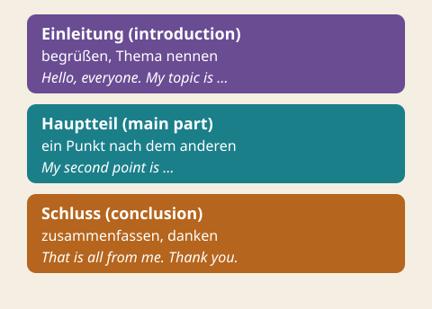

Einen Vortrag halten
Mit einem KI-Tutor lernen
Ein KI-Tutor erklärt dir diese Seite und hilft dir bei den Aufgaben. Wähl deinen Assistenten:
Mit Claude öffnen Mit ChatGPT öffnen Mit Mistral Vibe öffnen
Du nutzt dein eigenes Konto beim Anbieter. Der Assistent ist kein Angebot von lernapps.net: lernapps liefert nur Inhalte und Aufgaben. Die Wahl gilt für alle Seiten, nur auf diesem Gerät.
Worum es geht
Sophie soll der Klasse die Schülerzeitung vorstellen. Ein Vortrag hat denselben Bauplan wie ein Text, aber du sprichst zu Zuhörern. Danach kannst du einen kurzen Vortrag gliedern und mit passenden Redemitteln einleiten, überleiten und abschließen.
Aufgabe
Lösung
Ich beginne sofort mit dem ersten Punkt
Ohne Begrüßung und Thema wissen die Zuhörer nicht, worum es geht.
Ich begrüße die Klasse und nenne mein Thema richtige Antwort
So fängt eine Einleitung an: Die Zuhörer wissen sofort, was kommt.
Ich fange mit dem Dank an
Der Dank gehört an den Schluss. Am Anfang würde er verwirren.
Die Einleitung begrüßt die Zuhörer und nennt das Thema.
Lesestück · Sophies Vortrag
Lies Sophies Vortrag in drei Abschnitten. Sie spricht im neutralen Ton. Die Zahlen vor den Zeilen brauchst du bei den Aufgaben. Schwere Wörter stehen hier.
| Englisch | Deutsch |
|---|---|
| issue | die Ausgabe |
| puzzle | das Rätsel |
| publish | veröffentlichen |
| interview | das Interview, interviewen |
| turn to | zu etwas kommen |
| to sum up | zusammengefasst |
| audience | die Zuhörer, das Publikum |
| presentation | der Vortrag |
- Good morning, everybody. My name is Sophie, and today I want to tell you about our new school newspaper, The Millbrook Messenger.
- I will talk about three things: our team, our plans and how you can help.
Aufgabe
Lösung
Über Team, Pläne und Hilfe der Zuhörer richtige Antwort
Richtig: Zeile 2 nennt diese drei Dinge.
Über die Geschichte der Zeitungen in England
Davon steht nichts in den Zeilen 1 und 2. Sophie spricht nur über die neue Schülerzeitung.
Über Ellies Text zum Schulgarten
Ellie kommt erst später vor, als ein Beispiel für die Pläne.
Zeile 2 sagt den Zuhörern, welche drei Punkte kommen.
- First, our team. There are four of us, and Mr Hill helps us. We met for the first time last Thursday, and we had a lot of ideas.
- Now let me turn to our plans. Every issue will have a news page, an interview with a teacher and a page with puzzles. Ellie will write about a school garden, Amir will interview a teacher and Peter will draw the puzzles.
- Next, I will tell you when the newspaper will come out. The first issue will be ready in four weeks. After that, we will publish a new issue every month.
Aufgabe
Lösung
Zeile 4 beginnt mit Now let me turn to richtige Antwort
Richtig: So kommt Sophie zum zweiten Punkt, den Plänen.
Zeile 5 beginnt mit Next richtige Antwort
Richtig: Next führt zum dritten Punkt, dem Erscheinen der Zeitung.
Zeile 1 beginnt mit Good morning
Good morning ist die Begrüßung am Anfang der Einleitung, kein Übergang.
In den Zeilen 4 und 5 sagt Sophie, dass ein neuer Punkt beginnt.
- Finally, here is how you can help. Please put your ideas in the box next to the library door. We will read every note.
- To sum up, we have a team, a plan and a date for the first issue. Thank you for listening. Are there any questions?
Aufgabe
Lösung
Zeile 1
In Zeile 1 begrüßt Sophie die Klasse. Ein Dank steht dort nicht.
Zeile 6
In Zeile 6 bittet Sophie um Ideen. Das Wort Please ist eine Bitte, kein Dank.
Zeile 7 richtige Antwort
Richtig: Thank you for listening steht im Schluss.
Der Dank steht im Schluss, in Zeile 7.
Der Bauplan eines Vortrags

© CC-BY-4.0Der Bauplan eines Vortrags von oben nach unten: Jeder Teil hat seine Redemittel. Die Beispiele sind nur eine Auswahl.
Ein Vortrag hat denselben Bauplan wie ein Text: Einleitung, Hauptteil, Schluss. Neu sind die Redemittel. Sie sagen deinen Zuhörern, wo du gerade bist.
- Einleiten: Du begrüßt die Zuhörer und nennst das Thema. Sophie macht das in Zeile 1.
- Überleiten: Du kündigst den nächsten Punkt an. Sophie macht das in den Zeilen 3 bis 6: First, Now let me turn to, Next und Finally.
- Abschließen: Du fasst zusammen und dankst. Sophie macht das in Zeile 7.
Sprich im neutralen Ton: ganze Sätze, kein Slang. Sieh deine Zuhörer an, nicht deinen Zettel.
Merke
Erst sagst du, was kommt. Dann kommt es. Am Ende sagst du, was war. Redemittel führen deine Zuhörer dabei.
Übung
Aufgabe
Lösung
Richtige Antwort: 1. Good afternoon, everyone. Today I will talk about our class trip., 2. First, I will tell you where we went., 3. Next, I would like to show you our photos., 4. Finally, here is what I learned., 5. To sum up, it was a great day. Thank you for listening.
Einleitung mit Begrüßung und Thema, dann die Punkte mit First, Next und Finally, zuletzt der Schluss mit Zusammenfassung und Dank.
Aufgabe
Lösung
Richtige Antwort: Good morning, everybody. – Einleiten; Next, I will tell you when the newspaper will come out. – Überleiten; To sum up, we have a team, a plan and a date. – Abschließen
Wer ein Thema nennt, leitet ein. Wer den nächsten Punkt ankündigt, leitet über. Wer das Ende nennt, schließt ab.
Aufgabe
Setze das Redemittel ein. Du kennst die Wörter aus Sophies Vortrag.
Tipp
Die Redemittel stehen in Sophies Vortrag: am Anfang, in der Mitte und am Ende.
- Heute möchte ich euch etwas über unsere Bibliothek erzählen. → … I want to tell you about our library.
- Jetzt komme ich zu den Öffnungszeiten. → … let me turn to the opening times.
- Zusammengefasst: Die Bibliothek hilft uns allen. → …, the library helps us all.
Lösung
- Today I want to tell you about our library.
- Now let me turn to the opening times.
- To sum up, the library helps us all.
Today leitet ein, Now let me turn to leitet über, To sum up schließt ab.
Aufgabe
Höre den Satz und schreibe ihn auf.
- KI
- KI
- KI
Lösung
- A good talk has a clear beginning.
- Look at your audience and speak slowly.
- The last part says thank you and asks for questions.
Die Sätze geben Tipps für einen guten Vortrag.
Selbst sprechen
Aufgabe
Höre die Sätze und sprich sie nach. So kannst du einen Vortrag einleiten, überleiten und beenden.
- Welcome, everyone, to my presentation.KI
- My next subject is the school library.KI
- I am happy to answer your questions.KI
Zum Aufnehmen braucht diese Aufgabe JavaScript. Die Beispiele kannst du auch ohne anhören.
Lösung
- Welcome, everyone, to my presentation.
- My next subject is the school library.
- I am happy to answer your questions.
Offene Aufgabe
Welches Redemittel in Sophies Vortrag findest du am nützlichsten? Nenne die Zeile und schreibe zwei bis drei Sätze auf Englisch.
Eine gute Antwort enthält:
- Du nennst ein Redemittel und seine Zeile. Nachlesen
- Du gibst einen Grund mit because. (Form)
- Du schreibst in ganzen Sätzen. (Form)
Lösung
I think Finally in line 6 is useful because it tells the listeners that the last point is coming. Then everybody can listen again. Die App bewertet deinen Text nicht. Vergleiche ihn mit den Punkten.
Offene Aufgabe
Du stellst einer Gastklasse deine Klasse vor. Schreibe einen kurzen Vortrag mit drei bis fünf Sätzen: Begrüßung und Thema, ein Übergang, ein Punkt, Schluss mit Dank.
Eine gute Antwort enthält:
Lösung
Good afternoon, everybody. Today I want to tell you about our class. First, we are a friendly group and we help each other. Now let me turn to our projects. Last month we made a bird box for the school garden. To sum up, our class is small, but it is very busy. Thank you for listening.
Die App bewertet deinen Text nicht. Vergleiche ihn mit den Punkten.
Wie es weitergeht
Dein Vortrag ist gebaut. Auf der nächsten Seite schreibst du denselben Inhalt als Blogbeitrag: Hör genau hin, welche Wörter sich ändern.
Fehler gefunden oder eine Idee für diese App?